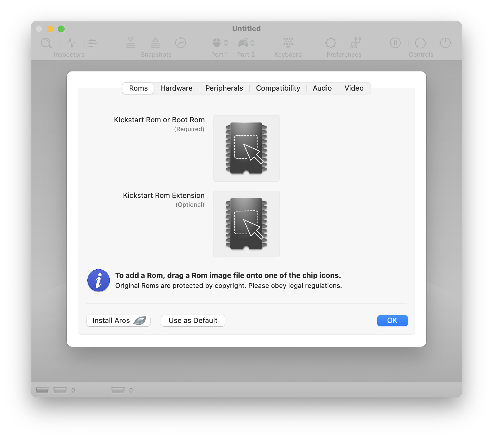
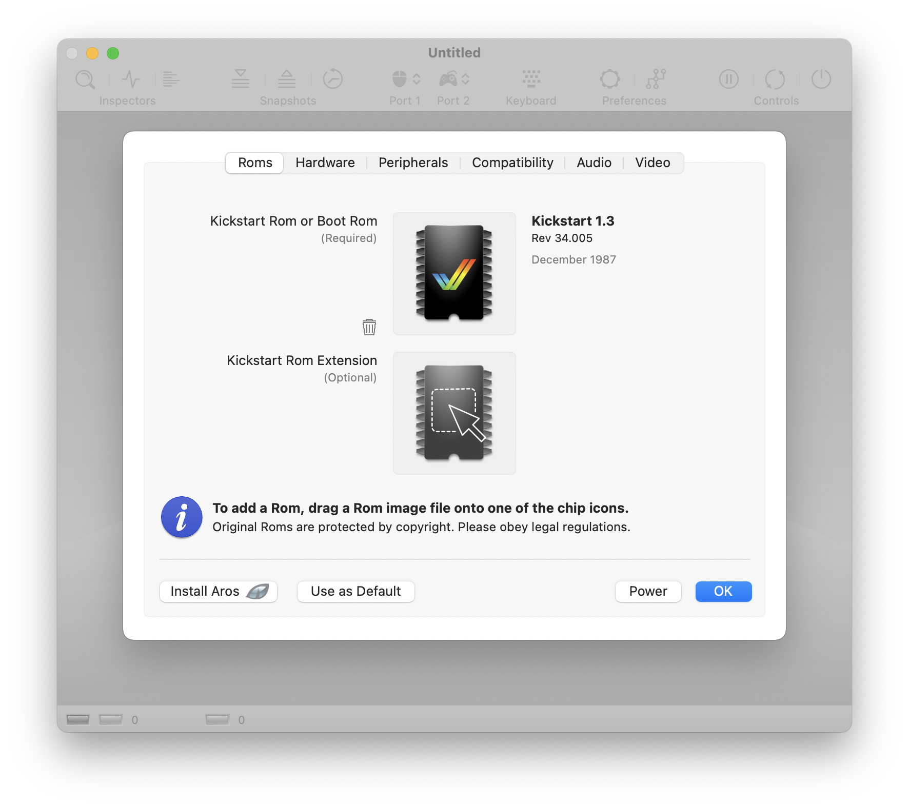
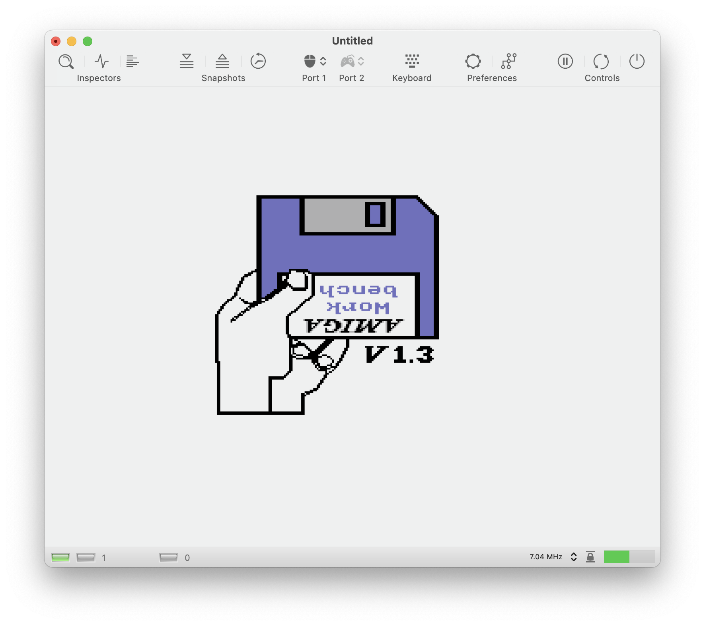
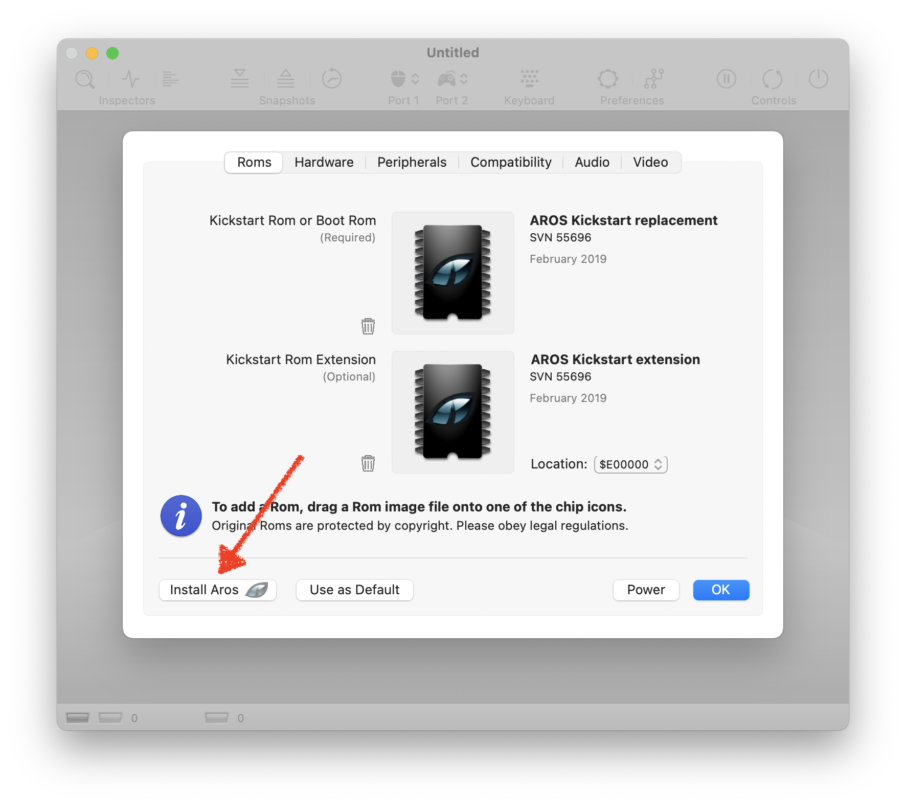
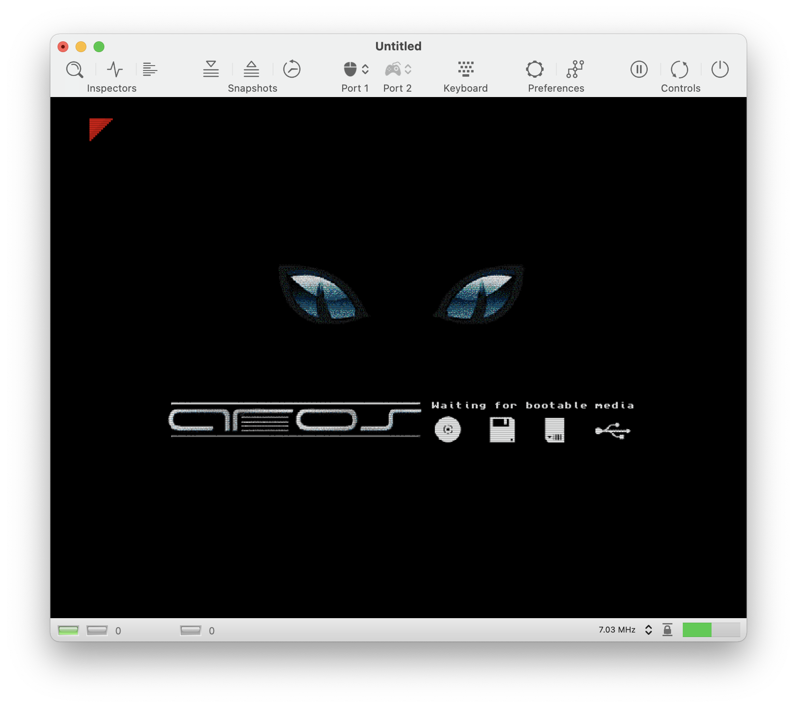

Getting Started
Installing vAmiga
Amiga is a native Mac application and as easy to install as most other Mac applications. Simply download the latest version from the main page and copy the executable into the application folder.
Please note that vAmiga is not a signed executable and macOS will initially refuse to open it when double-clicked. Please note that vAmiga is not a signed file and macOS will initially refuse to launch it with a double-click. To bypass this security mechanism, right-click on the icon and launch the application by selecting Open from the appearing pop-up menu.
vAmiga’s deployment target is macOS 10.14 (Mojave) which means that you can’t run the app on earlier macOS releases. Please note that vAmiga is only extensively tested with the latest macOS version. Thus, compatibility problems may well occur with older macOS versions.
Installing a Kickstart Rom
Emulating an Amiga requires a Kickstart Rom. Since the original Amiga Roms are the intellectual property of Cloanto, they cannot ship with the emulator. Thus, when opening vAmiga for the first time, the emulator will greet you with a Rom dialog:

In this dialog, a Kickstart Rom can be added via drag and drop. If you are the legal owner of a Cloanto rom, you can easily install it by dragging it over the Rom icon:

Once the Rom is installed, the emulator is ready to be powered on. To do so, click the power button and have fun with your new old Amiga:

In case you don't own a legal rom, you can alternatively start vAmiga with the free Aros Kickstart replacement. Aros Roms ship with the emulator and can be installed easily by clicking the "Install Aros" button:

Again, clicking the power button starts the emulator. With the free Kickstart Rom replacement installed, the Aros boot screen shows up:

Even though the Aros Roms are a great achievement of the open source community, we recommend installing original Commodore Roms as they offer much higher compatibility.
Please keep in mind that vAmiga will not remember the Rom settings by default, i.e., the next time the emulator is startet, the Rom dialog will appear again. If you wish to use the currently installed Rom permanently, click the "Use as Default" button next to the Aros button.